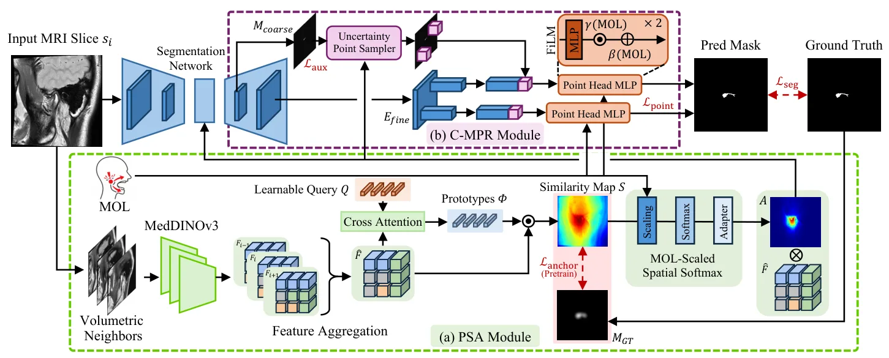
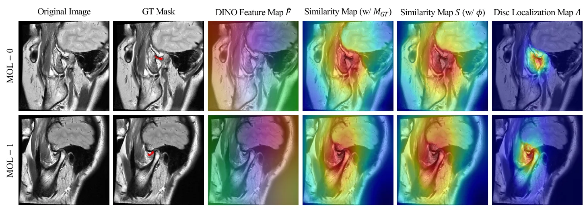
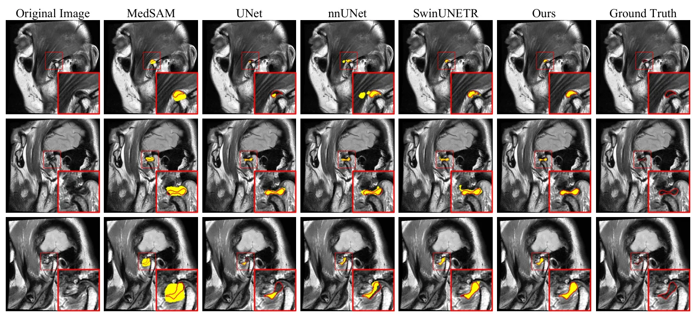
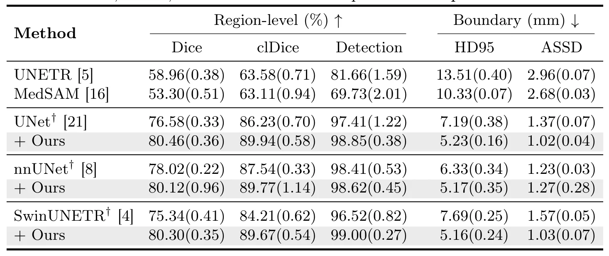
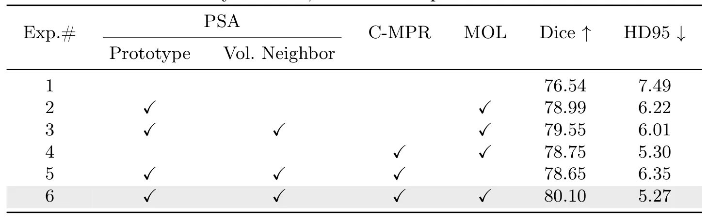

通过语义锚定与临床先验实现解剖一致的 TMJ 关节盘分割Anatomically Consistent TMJ Disc Segmentation via Semantic Anchoring and Clinical Priors
属于 3D 医学图像分割，和三维体数据处理有关，但与 SLAM/GNSS/重建主线关联较弱；作为基础模型特征锚定思路保留。
一句话工作总结
面向 3D 医学 MRI，小目标分割通过基础模型语义锚定和临床先验获得更稳定、解剖一致的边界。
摘要
TMJ 关节盘 MRI 分割受小尺寸、低对比度和形态变化影响，普通分割网络常产生碎片化或解剖不一致的 mask。TISC 框架先用 Prototypical Semantic Anchoring 聚合相邻切片的 MedDINOv3 特征，并形成 prototype-driven similarity map 以稳定定位关节盘；随后通过 Clinical-Metadata Point Refinement 模块利用 Mouth Open Limitation 等临床元数据调制边界点预测。在 1300 名患者、2488 个 PD MRI 体数据上，该方法相对强基线最高提升 4.96 Dice。
Segmenting the temporomandibular joint (TMJ) disc from MRI is essential for accurate diagnosis of internal derangement, yet it remains unreliable in practice due to its small size, low contrast, and morphological variability. Existing methods, primarily adapted from general segmentation architectures, often produce fragmented or anatomically inconsistent masks, leading to unstable measurements of disc position and shape for downstream diagnosis. To address these challenges, we propose TISC, a TMJ disc segmentation framework that integrates semantic anchoring with clinical metadata-guided boundary refinement. The framework first establishes robust disc localization in the foundation model feature space via a Prototypical Semantic Anchoring (PSA) module that aggregates adjacent-slice MedDINOv3 features and derives a prototype-driven similarity map. It then performs targeted boundary refinement through a Clinical-Metadata Point Refinement (C-MPR) module, with point-wise predictions modulated by Mouth Open Limitation (MOL), a clinical indicator associated with disc displacement without reduction. On a large-scale cohort of 2,488 PD MRI volumes from 1,300 patients, our method achieves up to a 4.96 Dice improvement over strong baselines across diverse architectures, delivering more anatomically coherent and clinically reliable TMJ disc segmentation.
中文解读摘录
- 英文题名：Scene-Level Heterogeneous Physics Simulation with 3D Gaussian Splats
- 作者：Xiaoyang Liu, Shangzhe Wu, Kai Han
- 类别/来源：cs.GR, cs.AI, cs.CV；rss:cs.GR；采集 score=12；阅读优先级=9.2/10。
- 一句话总结：把 3DGS、网格和流体统一抽象为物理粒子，使捕获场景中的高斯资产能够参与真实交互和非刚体变形。
- 为什么值得看：与 3DGS 场景表示、交互式三维资产和机器人仿真高度相关；亮点在于从渲染表示跨到统一物理表示。需后续确认开源计划、运行成本和复杂真实场景鲁棒性。
- 标签：3DGS、物理仿真、场景级交互、非刚体变形
- 链接：abs / PDF
图表/页面预览
{kind=link}

{kind=link}

{kind=link}

{kind=link}

{kind=link}
